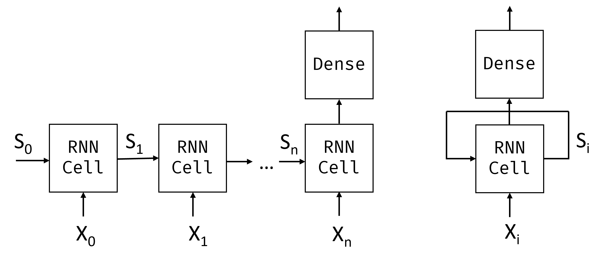
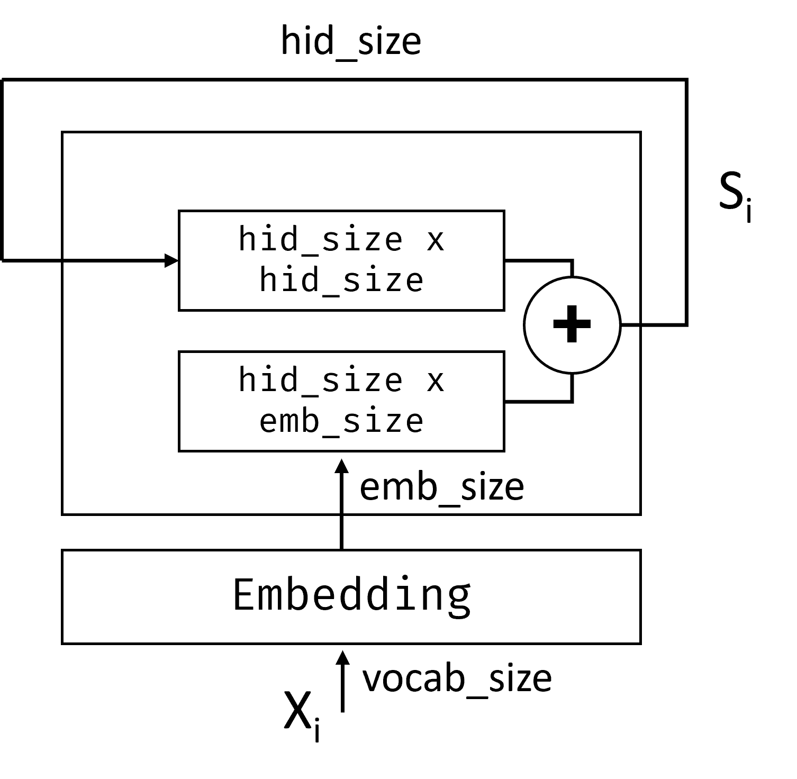
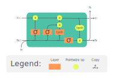

循环神经网络
课前测验
在之前的章节中，我们使用了丰富的文本语义表示，并在嵌入之上使用了一个简单的线性分类器。这种架构的作用是捕捉句子中单词的聚合意义，但它没有考虑到单词的顺序，因为嵌入之上的聚合操作移除了原始文本中的这部分信息。由于这些模型无法对单词顺序进行建模，无法解决更复杂或含糊的任务，如文本生成或问题解答。
为了捕捉文本序列的意义，我们需要使用另一种神经网络架构，称为循环神经网络，简称RNN。在RNN中，我们将句子一个符号接一个符号地通过网络，网络会产生某种状态，然后我们将该状态与下一个符号一起再次传递给网络。

图片作者所有
给定输入序列的令牌X0,...,Xn，RNN创建一个神经网络块的序列，并使用反向传播端到端地训练这个序列。每个网络块将一对(Xi,Si)作为输入，生成Si+1作为结果。最终状态Sn或(输出Yn)进入一个线性分类器以生成结果。所有的网络块共享相同的权重，并通过一次反向传播通过端到端地训练。
由于状态向量S0,...,Sn通过网络传递，它能够学习单词之间的顺序依赖关系。例如，当某个单词not出现在序列中的某处时，它可以学习在状态向量中的某些元素上执行否定，从而实现否定。
✅ 由于上图中的所有RNN块的权重是共享的，右侧的相同图片可以表示为一个带有循环反馈环的块，它将网络的输出状态返回到输入。
RNN单元的剖析
让我们看看一个简单的RNN单元是如何组织的。它接收前一个状态Si-1和当前符号Xi作为输入，并需要生成输出状态Si（有时，我们也对某些其他输出Yi感兴趣，就像在生成网络的情况下）。
一个简单的RNN单元里面有两个权重矩阵：一个用于转换输入符号（称为W），另一个用于转换输入状态（称为H）。在这种情况下，网络的输出计算为σ(W×Xi+H×Si-1+b)，其中σ是激活函数，b是附加的偏置。

图片作者所有
在很多情况下，输入令牌在进入RNN之前会经过嵌入层以降低维度。在这种情况下，如果输入向量的维度是emb_size，状态向量是hid_size - 于是W的大小是emb_size×hid_size，而H的大小是hid_size×hid_size。
长短期记忆网络（LSTM）
经典RNN的主要问题之一是所谓的梯度消失问题。由于RNN在一次反向传播中的端到端训练，它很难将误差传播到网络的第一层，因此网络无法学习远距离令牌之间的关系。解决这个问题的方法之一是通过使用所谓的门控引入显式状态管理。这种架构有两种较为知名的类型：长短期记忆（LSTM）和门控循环单元（GRU）。

图片来源待定
LSTM网络的组织方式类似于RNN，但有两个状态在层与层之间传递：实际状态C和隐藏向量H。在每个单元中，隐藏向量Hi与输入Xi拼接在一起，它们通过门控来控制状态C的变化。每个门控都是具有sigmoid激活函数（输出在[0,1]范围内）的神经网络，乘以状态向量时，可以视为逐位掩码。以下是各个门控（从左到右如上图所示）：
- 遗忘门控接收隐藏向量并确定我们需要忘记状态向量C的哪些部分，以及哪些部分需要保留。
- 输入门控从输入和隐藏向量中提取信息并插入状态。
- 输出门控通过带有tanh激活函数的线性层变换状态，然后使用隐藏向量Hi选择其部分组成，以生成新状态Ci+1。
状态C的元素可以视为某些可以开关的标志。例如，当我们在序列中遇到一个名字Alice时，我们可能假定它指的是一个女性角色，并在状态中激活一个标示我们已知句子中有女性名词。当我们进一步遇到and Tom时，会激活表示我们有一个复数名词的标志。因此，通过操作状态，我们可以跟踪句子部分的语法属性。
✅ 一篇理解LSTM内部结构的绝佳资源是Christopher Olah撰写的理解LSTM网络这篇文章。
双向和多层RNN
我们已经讨论了从序列开始到结束单向操作的循环网络。这看起来很自然，因为它类似于我们阅读和聆听演讲的方式。然而，由于在许多实际情况下，我们可以随机访问输入序列，所以运行双向的循环运算也有意义。这类网络称为双向RNN。在处理双向网络时，我们需要两个隐藏状态向量，一个用于每个方向。
一个循环网络，无论是单向的还是双向的，都会捕捉序列中的某些模式，并将它们存储在状态向量中或传递到输出中。就像卷积网络一样，我们可以在第一层之上构建另一个循环层，以捕捉更高层次的模式，从第一层提取的低级模式构建高层模式。这引导我们到多层RNN的概念，它由两个或更多的循环网络构成，其中前一层的输出作为输入传递到下一层。

图片源自Fernando López 这篇精彩的文章
✍️ 练习：嵌入
在以下笔记本中继续学习：
结论
在本单元中，我们看到了RNN可用于序列分类，但实际上，它们还可以处理许多其他任务，如文本生成、机器翻译等。在下一个单元中，我们将考虑这些任务。
🚀 挑战
阅读一些关于LSTM的文献并考虑其应用：
课后测验
复习与自学
- 理解LSTM网络 by Christopher Olah.